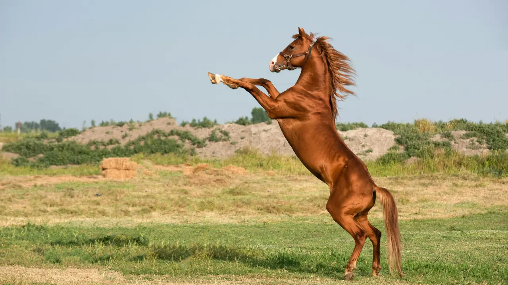

En bref : Un tocard se repère grâce à cinq signaux objectifs : forme en chute, poids trop lourd, distance inadaptée, terrain contraire et statistiques faibles. En croisant ces critères, votre analyse hippique devient fiable.
Chaque semaine, des milliers de joueurs découvrent une course, choisissent un numéro au hasard et espèrent décrocher le bon rapport. Pourtant, la différence entre un joueur régulier et un analyste ne vient presque jamais de la chance. Elle vient d'une compétence précise : savoir écarter les chevaux qui n'ont aucune chance. Dans le milieu hippique, on les appelle les tocards.
Un tocard n'est pas forcément un mauvais cheval. C'est le plus souvent un cheval engagé dans des conditions qui ne lui conviennent pas. Le travail d'une vraie analyse hippique consiste à repérer ces situations avant le départ, puis à retirer ces concurrents de la sélection. Un tocard bien identifié vaut mieux qu'un favori douteux.
Un cheval qui enchaîne trois échecs, surtout à un niveau inférieur au sien, traverse une mauvaise passe. La confiance se perd vite et le retour au premier plan demande du temps. Une contre-performance isolée n'est pas un signal, une série en revanche en est un.
Dans un handicap, quelques kilos supplémentaires coûtent des longueurs dans les derniers mètres. Un cheval qui n'a jamais porté une telle charge affronte une inconnue réelle.
Un cheval rapide sur une courte distance devient inoffensif sur un parcours de fond. La distance doit toujours être confirmée par une performance passée au même niveau.
Un concurrent brillant sur terrain bon peut disparaître sur un sol souple ou lourd. Ce critère est le plus souvent négligé par les joueurs pressés.
Un jockey ou un entraîneur peu performant sur cet hippodrome, cette distance ou ce terrain constitue un signal d'alerte à ne pas ignorer.
Le Prix de Versailles, disputé à Vincennes, illustre parfaitement ce raisonnement. Sur une course de ce type, le rythme du peloton et la position de corde pèsent lourd sur le résultat. Un cheval bien placé mais en nette baisse de forme reste un tocard, même si sa cote séduit. Repérer ce genre de piège demande de croiser plusieurs informations, pas de suivre l'avis général.
Sur Bravo le Quinté, chaque analyse hippique suit la même grille de lecture. Nous comparons la forme, le poids, la distance, le terrain et les statistiques avant de construire une sélection. La démarche de notre partenaire Bravo Turf PMU est identique : proposer une lecture claire plutôt qu'une accumulation de numéros sans logique.
Avant de valider une sélection, posez-vous trois questions simples :
Si une seule réponse est non, la prudence s'impose. Si deux réponses sont non, le cheval rejoint la liste des tocards à écarter.
Une sélection gagnante est souvent une sélection courte. Mieux vaut écarter trois chevaux sans chance que d'en ajouter un par peur de manquer le bon résultat. La discipline, plus que l'intuition, sépare le joueur qui progresse de celui qui répète les mêmes erreurs.
À retenir : Un tocard se repère grâce à des signaux objectifs : forme en chute, poids trop lourd, distance inadaptée, terrain contraire et statistiques faibles. En appliquant ces cinq contrôles, vous transformez une analyse hippique approximative en méthode fiable. C'est exactement la démarche que nous suivons chaque jour pour vous aider à mieux lire les courses.